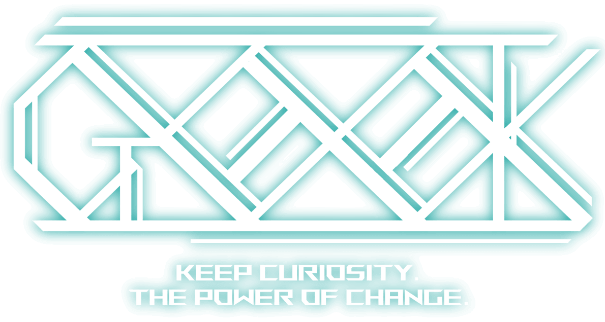
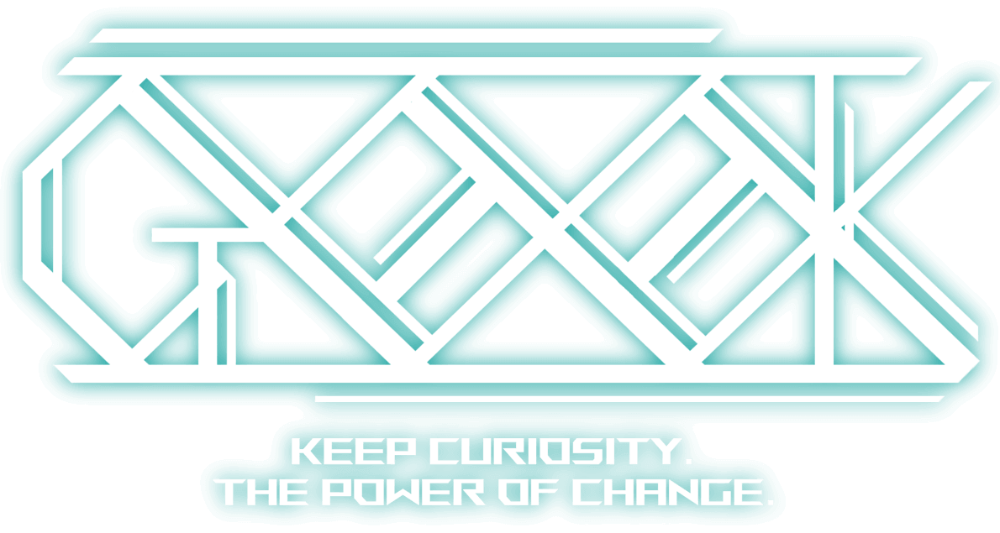
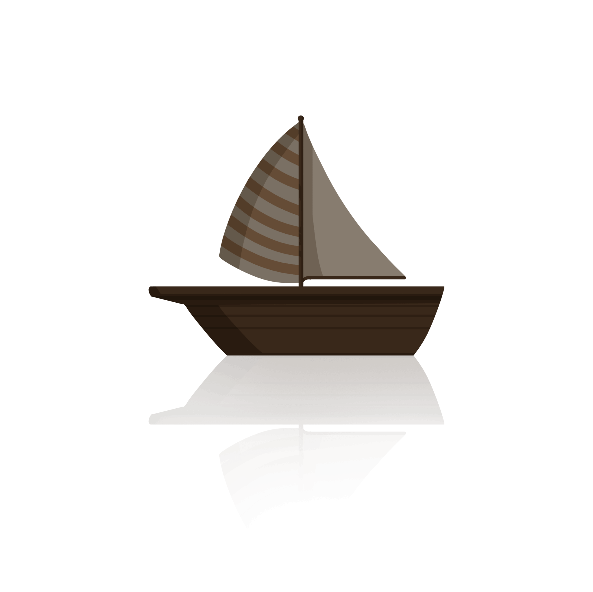
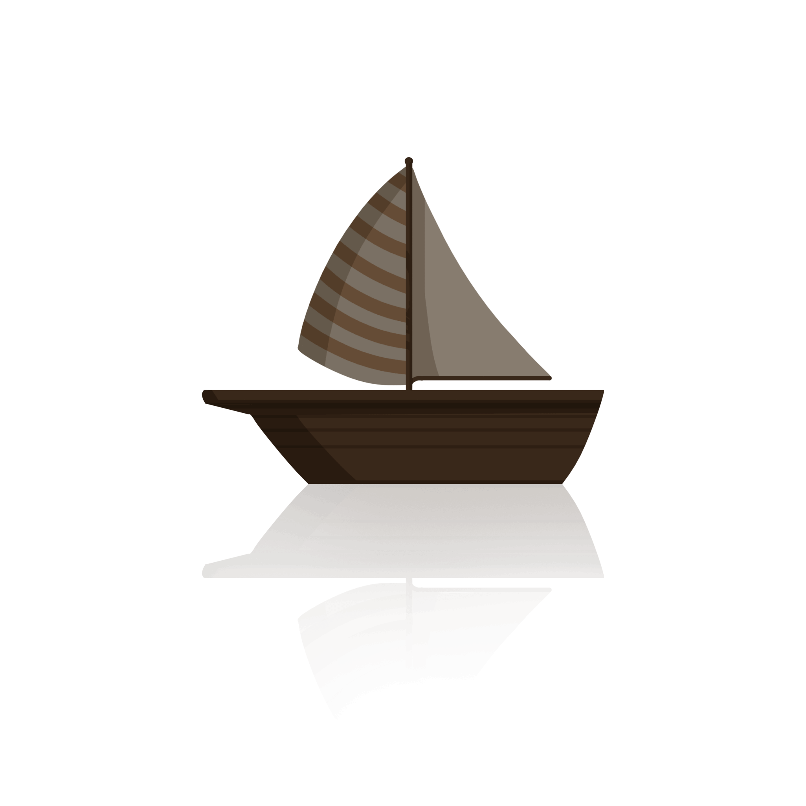

后端：通常也称服务器端开发。我们主要使用Go语言进行项目开发，Go在组内后端方向中十分流行，常配合Gin/Echo等高性能Web框架,使用GORM进行数据库操作，Redis做缓存，WebSocket处理实时通讯。凭借高效的并发模型和简洁的语法，Go在后端开发中表现尤为出色
我们的特点：我们常常一起合作参与到项目开发与比赛中，但我们不满足于此，我们最热衷于开发所使用技术背后的原理学习与研究。
PM（面向24、25级招生）:PM是针对某一项或是某一类的产品进行规划和管理的人员。PM需要拥有缜密的产品逻辑思维，研究用户心理，负责产品的整个生命周期。PM参与产品的UI和交互设计，为设计和开发确定产品原型，能够将产品变得有个性,操作变得舒适简单、自由。PM需要一定的文档能力和沟通能力，能够在团队合作的过程中跟各个角色进行有效沟通。
我们的特点： 我们善于在团队中协调不同角色，关注用户体验与产品逻辑的结合。不仅注重功能实现，更注重产品能否真正解决用户的问题。
安全方向分为Web安全和二进制安全，二者都要求从业者具备极高的技术能力和扎实的基础。Web安全主要防护网络应用的攻击，要求熟悉前后端技术、常见漏洞及加密认证机制；而二进制安全则深入到操作系统和底层代码，涉及漏洞挖掘、逆向工程等，需要精通汇编、调试与内存管理。不论哪个方向，扎实的理论知识与丰富的实践经验都是必不可少的，只有持续学习与积累，才能在信息安全领域立足。
我们的特点：安全方向注重深入的技术理解和高强度的实践能力，要求从业者具备扎实的基础知识和应对复杂漏洞的能力。
前端：前端开发是创建Web或App界面并呈现给用户的过程。前端不仅仅是页面展示，更是用户与产品交互的核心环节。开发者需要掌握HTML、CSS和JavaScript等基础技术，并结合Vue、React等现代框架实现复杂的交互逻辑与功能。前端方向还涉及性能优化、跨端适配与可访问性设计，要求开发者在界面美观与运行效率之间取得平衡。随着技术的发展，前端早已不仅是“还原设计”，而是承载用户体验和业务逻辑的重要一环。
我们的特点：我们常常一起合作参与到项目开发与比赛中，但我们不满足于此，我们更注重探索界面交互背后的原理与技术。
多元化是我们的特色之一。在这里，你可以自由选择前端、后端、产品、安全等多个方向，找到最适合自己的发展路径。
每周我们会举行一次例会，其中包括短分享与技术例会。例会用来汇报我们的学习内容，供成员之间交流学习。
•热爱计算机，具有geek精神，喜欢DIY，动手能力较强。
•有编程/算法/硬件基础为佳(有作品可附上)。
•有足够的空余时间，热爱思考，对事物有自己的见解。
ps:非新思路统招只有通过发送邮件自我介绍后，收到邮件回执后才会被允许进群,在读学生,都可邮件到newthread-geek@outlook.com报名加入。
(信中需备注个人基本信息及意向方向,此招新活动为长期招新)
More Question
 
